Objective 1.5#
LO# |
Description |
|---|---|
1.5 |
I can calculate the efficiency of a system modeled as an electrical circuit. |
Power Generation and Motors#
We’re fortunate to live in a society that has electrical power at our disposal. The simplicity of plugging a device into an outlet makes it all too easy to take this for granted. However, this is a very modern convenience made possible by many advancements at the end of the 19^th^ century and throughout the 20^th^ century. The most notable advancements were those in generators and motors at the end of the 19^th^ century by the electrical engineer Nikola Tesla[1] and others that paved the way for reliable and cheap electrical power. Due to the importance of motors and generators in power generation and distribution, we will cover the principles of motors and generators before discussing their efficiencies and various sources of electrical power. Interestingly, generators are not restricted to powerplants; generators are attached to the turbines in many modern aircraft and provide all of the usable electricity for the aircraft and its passengers.
Motors and Generators#
Motors allow us to convert electrical energy into rotational mechanical energy. They consume electrical energy and output rotational mechanical energy in the form of a rotating shaft which can do work. From there, mechanical engineers can convert it into all sorts of other mechanical work such as moving a vehicle, raising an elevator, or pumping water. Generators simply reverse this process: mechanical energy is used to turn a shaft, which outputs electrical energy as it rotates.
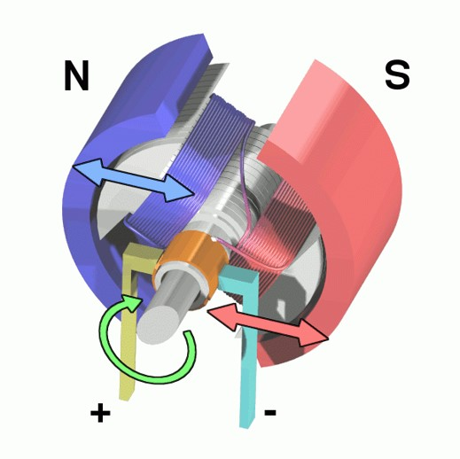
Figure 1: A 3D cross-section of a DC motor.
The basic principles of motors are fairly straightforward. When two magnets are near each other, they naturally want to line up so the “North” end is near the “South” end of the other. To leverage this effect, we place a magnet on a shaft that can rotate, inside another magnet that stays stationary. In this case, the rotating magnet, called the rotor, will perform work in rotating to align itself with the outer magnet, called the stator. This can be visualized in Figure 1 and Figure 2.
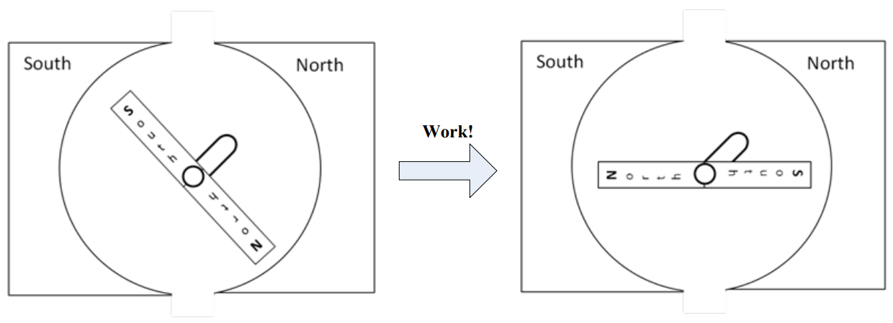
Figure 2: A motor consisting of a rotor and stator
According to Ampere’s Law, a wire with an electric current going through it creates a magnetic field around it. Furthermore, if we coil that wire around a ferromagnetic material, such as a block of iron, it strengthens the field and makes a magnet with a North and South pole. In fact, it is possible to make a very simple electromagnet by wrapping a wire around a large nail and then connecting the wire to a battery. However, the most useful thing about electromagnets in motors is this: if the direction of the current is reversed, the polarity of the magnet switches. This is shown in Figure 3 below.
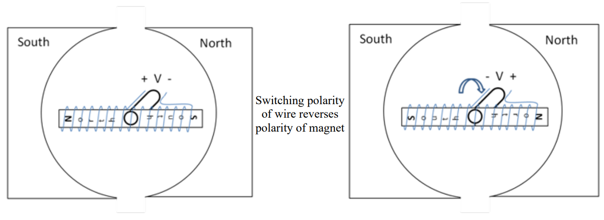
Figure 3: A DC motor with permanent magnet stators and an electromagnetic rotor
When we reverse the polarity, the North and South poles on the rotor switch sides, causing a force that tries to place the rotor in the opposite position. If we properly time the polarity reversal while the rotor is in motion, the rotor tries to align to a new position, creating torque as it tries to reach the new position. In essence, a DC motor turns by changing the poles on the rotor while the poles on the stator are held constant. This effect is visualized in Figure 3.
In order to properly coordinate the timing of this effect, a DC motor uses a commutator and brushes to both transfer the electricity and reverse the polarity. A commutator is a metal strip on the outside of the shaft which provides metal conductivity from the rotating shaft to the coils on the rotor. Brushes are metal strips (or a roller) that touch the commutator and provide the electric source. While not completely accurate, think of the commutator and brushes as the voltage source (+ V – and – V +) in Figure 3. Every time the shaft completes half a rotation, the commutators switch which charged brush (positive or negative) they are connected to. Therefore, the current is reversed and so is the polarity of the electromagnet, and the motor continues to spin. The brushes, commutator, and rotor of a DC motor are shown in Figure 4.
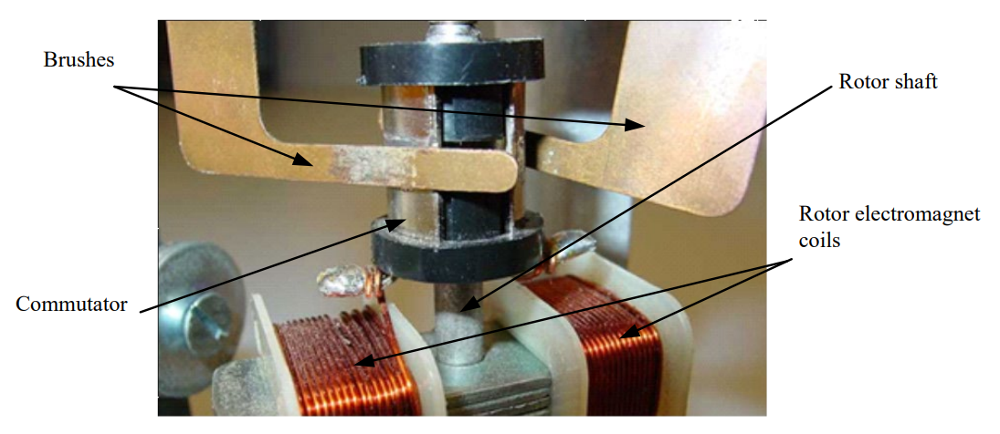
Figure 4: A view of the commutator and brushes
Motors can work on either AC or DC electricity, and within each of those groups, there are several different designs. However, all are based on the concept of magnetic fields trying to align.
One last note on motors: as with all electrical machines, they are rated in how much work they can do per unit time. However, while electrical engineers use Watts to rate power, motors are rated in horsepower. Horsepower was used for motors and engines before electricity was discovered, and the convention stuck. The conversion is one horsepower (hp) to 745.7 Watts.
Efficiency (\(\mathbf{\eta)}\)#
As we prepare to move into more real-world scenarios, we need to introduce the concept of efficiency. Efficiency is a measure of how much power is wasted when we use electricity to do useful tasks. If we don’t waste any power, or we use all the power we produce, the efficiency of our system is 100%. If we only waste a little power, then our efficiency is high (usually, above 95%). If we waste a lot of power, our efficiency is low. There are a number of ways to calculate efficiency; the one you use depends on what you know about the system at hand.
In the above equation, POUT or PUSEFUL is the power consumed doing useful work, while PIN or PPRODUCED is the total amount of power the source needs to supply to meet the needs of the load and the loss (PLOSS). Up until this point, we have presented ideal circuits (100% efficient) where all of the devices were performing useful functions. Most electrical circuits actually lose power somewhere - think of the heat radiating off of your laptop after it has run for a while. We can model these losses fairly easily by including an additional resistor in series with our load. This resistor doesn’t physically exist in the circuit, but is useful for helping us understand where the power is going. The circuit in Figure 5 illustrates this concept:
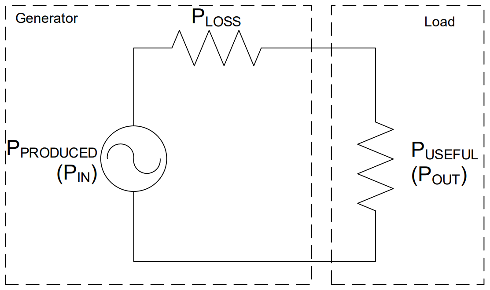
Figure 5: Modeling losses in a system with a series resistor
Example Problem 1#
An AC-powered rotating beacon, modeled as a \(120 kΩ\) resistor, is to be installed on an aircraft. Since the beacon requires \(40 V_{RMS}\) to operate, a resistor is placed in series to act as a voltage divider. The aircraft generator produces a voltage of \(v(t) = 84.85*\cos(360°*400*t)V_{RMS}\). If the required efficiency for this circuit is 85%, is this a viable option?
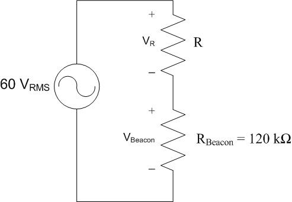
Understand: This is a voltage division problem where the resistor \(R\) will drop voltage so the beacon only receives \(40 V_{RMS}\). In the circuit, we want the rotating beacon to operate, so the power consumed by the beacon itself is useful. The power consumed by the resistor \(R\), however, is wasted. The power dissipated by the resistor is a loss that lowers efficiency. The source needs to provide both the useful power and the wasted power to make the circuit work. We can model this scenario as the circuit to the right.
Identify Key Information:
Knowns: We know the voltage provided to the circuit is \(v(t) = 84.85*\cos(360°*400*t)V_{RMS}\) and the beacon needs \(40 V_{RMS}\) , but the efficiency of the overall system needs to be 85%.
Unknowns: The current in the circuit, the resistance of the “loss resistor”, the voltage dropped across the “loss resistor”.
Assumptions: None.
Solve: The first thing we need to do is convert the source voltage into RMS. Since no \(V_{Bias}\) was mentioned, we will assume it is zero and that the \(V_{RMS}\) is:
We know that the source produces \(60 V_{RMS}\) and the beacon drops \(40 V_{RMS}\) KVL tells us that \(R\) must drop \(20 V_{RMS}\).
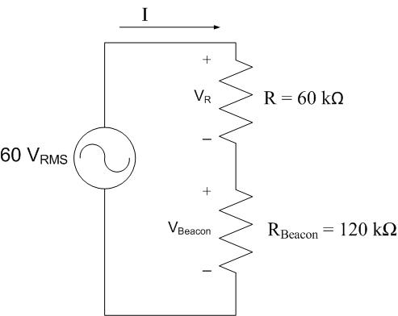
Since we know that the current in series components is the same, we can determine \(I\) (in \(A_{RMS}\)) from Ohm’s Law at the beacon:
We can now determine the power produced by the source:
The power consumed by the beacon is:
Finally, the efficiency is
Answer: No, this is not a viable option since the efficiency is only 66.67%, which is less than the required 85%.
Motor Efficiency#
Now let’s look at how conservation of power applies within a DC motor. Figure 6 shows the relationship between the input electrical power we supply to the motor compared to the output power. The input power will be the voltage we provide across the terminal of the motor, \(V_T\), times the current going into the motor.
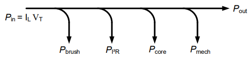
Figure 6: Relationship between input and output power
Before the electricity gets to the coils on the rotor to create the electromagnet, it must pass across the brushes/commutator. As those connections are made and switched, there is typically a little sparking. This is energy that is lost to heat/light, and we will call this \(P_{brush}\). Within the motor there are resistive (heat) losses due to the current flowing through components that have resistance, such as the copper wires in the coils. These are called copper losses or \(I^{2}R\) losses for this reason. There are core losses within the electromagnet, such as the magnetic flux leaking outside the motor and molecules within the electromagnet consuming energy. These are lumped as core losses. Also, some power is lost to friction of the rotor spinning as well as air resistance. These mechanical losses are lumped together as \(P_{mech}\). All that is left is the power transferred out of the motor as torque.
If we model this discussion as a circuit with lossy devices, we would get circuit below, where:
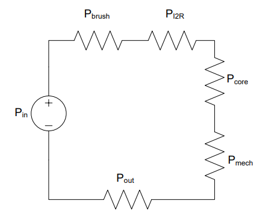
Figure 7: A circuit modeling the losses in a motor
Symbol |
Description |
|---|---|
\(P_{brush}\) |
Loss due to sparking during commutation |
\(P_{I^2R}\) |
Loss due to resistance of copper wires |
\(P_{core}\) |
Loss due to magnetic flux leaking outside the motor |
\(P_{mech}\) |
Loss due to friction |
We can use the input and output power to determine the efficiency of the motor. The efficiency tells us the percent of the input power that can be used at the output.
Example Problem 2:#
An 87% efficient, 40-hp motor is plugged into a standard electrical outlet. How much power will it consume and how much current will it draw when operating at rated conditions?
Understand: By definition, a motor of a given rated horsepower is expected to deliver that quantity of power in a mechanical form at the motor shaft. Since the motor is not 100% efficient, we will need to supply more power to the motor in order to account for the losses.
Identify Key Information:
Knowns: We know the horsepower rating and the efficiency. We also know the outlet is providing 120VRMS.
Unknowns: The power and current drawn by the motor.
Assumptions: None.
Plan: First, we need to convert the power from hp to W. Then, we need to use the efficiency equation to determine the required input power. Finally, use the power law to determine the current drawn by the motor.
Solve: Determine the power delivered to the shaft, in Watts:
Then use the efficiency equation to determine the motor’s power requirement.
Since a standard electrical outlet delivers 120 VRMS, we can use the average power equation to determine current draw:
Answer: The motor will consume \(34.29 kW\) and draw \(286 A_{RMS}\) when running at rated conditions.
Generators - Extra Info#
Thus far, we’ve exclusively discussed motors and have not really mentioned generators. However, generators, except in some very specialized cases, look exactly like motors, as illustrated in Figure 8. Physically, they are the same. Instead of applying a voltage and watching the rotor spin, we can physically spin the rotor to extract electrical energy. When the coils of wire on the rotor spin through the magnetic field of the stator, a voltage is induced in the coils of wire!
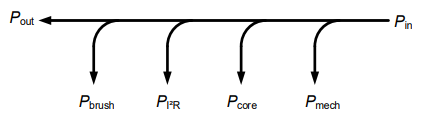
Figure 8: Generator power flow
In an aircraft, an AC generator is driven by the rotation of the engine, and Figure 9 shows the myriad of different generators and motors found on a standard aircraft. These generators are typically used to provide \(115 V_{RMS}\) running at \(400 Hz\) to the devices on board with some of it converted to DC voltage (we’ll talk about how to do that later in this block).
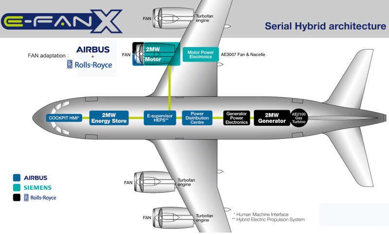
Figure 9: An example of the power architecture of a commercial aircraft.
Source: https://www.greencarcongress.com/2017/11/20171128-efanx.html
Power Generation#
Although electricity is all around us, very few of us give much thought to where it comes from. The power plants are usually, but not always, far removed from the population so we simply do not have to deal with them on a regular basis.
This was not always true though. In the late 1800’s, when electricity was first beginning to be used, multiple power stations were spread out through population centers due to the power losses (in the form of heat) caused by resistance in the wires travelling over long distances. The advent of transformers helped solve that problem, although it was a fierce battle between Thomas Edison and George Westinghouse/Nikola Tesla. The next lesson is devoted to explaining how transformers enable efficient transmission of power.
There are many advantages to having power plants far removed from population centers. This allows them to:
Be closer to the fuel/resources which generate the electricity
Be large plants which are more efficient due to economy of scale
Minimize the impact of exhaust/pollution within the community
As you would expect, power needs vary throughout the day, and those needs are classified into into three categories: base power, intermediate power, and peak power. Base power is the minimum required power to meet the needs of an area. Intermediate power is a predictable increase in power demand throughout the day due to normal activities, such as lights and kitchen appliances being turned on in the evenings when people return home from work. Peak power is the absolute maximum power needed to fill unforeseen requirements, such as an especially hot or cold day (which means more air conditioners or furnaces are operating).
Almost all electrical power plants share one thing in common: electricity is generated by turning the shaft of a generator. The most common type of power plant is a thermal power plant. In these types of plants, water is heated to steam, which then passes through a turbine connected to the shaft of the generator. As the steam passes through the turbine, it causes the turbine and shaft to rotate, producing electrical energy. This process is seen in Figure 10.
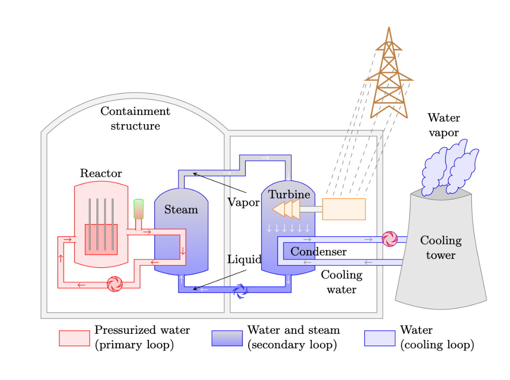
Figure 10: A nuclear power plant is an example of a thermal power plant.
Steam is not the only way the shaft can be turned. Wind, water, expanded air, or mechanical energy from a motor can turn the shaft, generating electricity. However, more than 70% of our electricity is generated using steam to turn large turbines.
Electricity can be generated by several different sources, but the following six sources provide about 96% of our electricity.
Natural Gas. Natural gas plants use the expansion of the gas when it is burned to turn turbines (though some hybrid plants exist which also use steam) and provide approximately 40% of US electricity. Since they do not need to heat water for steam, they are very responsive to changing power needs and are often used to provide intermediate and peak power. While they are not as clean as nuclear plants, they have fewer emissions than coal plants. Their most severe disadvantage comes from the difficulty and high cost of transporting and storing natural gas in bulk due to its low density and instability (it’s prone to erupting into flames).
Nuclear. These thermal plants provide approximately 20% of US electricity and are also used for base loads since they cannot change their output quickly. Their primary advantages are that they provide a consistent amount of power and tend to be very cost effective. Similar to coal plants, they are poor candidates for filling intermediate and peak power requirements because they require more than a day to start up. In contrast to coal plants, nuclear plants do not emit contaminants into the atmosphere. However, the large amount of water required for cooling can have an environmental impact. Nuclear plants are a very popular electricity source in Europe, where France receives 80% of its electricity from nuclear production. On the other hand, construction of nuclear plants in the U.S. has stalled due to concerns about radiation accidents, such as the one from Three Mile Island in 1979. Furthermore, finding a long-term, safe method of disposing of waste products, especially for the enriched uranium used to make nuclear weapons, has been a significant problem.
Coal. These thermal plants are used for base loads since they cannot change their output quickly. Coal power plants provide 19% of U.S. electricity. Their primary advantages are that they provide a consistent amount of power and tend to be very cost effective, especially here in the U.S. where coal is relatively plentiful. They are poor candidates for filling intermediate and peak power requirements because they require more than a day to start up. They are also a source of pollution, which can damage the environment. The Clean Air Act of 1970 eliminated a significant amount of pollution caused by coal power plants, and now, they are now required to install equipment to limit contaminants.
Wind. Generating power by using wind to turn a turbine accounts for approximately 8% (and rising) of US electricity. Wind turbines tend to be cost effective because of their use of a renewable resource and are also “clean” (though many detractors point to their destruction of landscapes and impact on bird populations as environmental concerns). Because power generation is highly variable and completely unrelated to power needs, they are not reliable for meeting base or peak power needs. Additionally, in order for them to be useful in helping with intermediate loads, storage mechanisms are needed to keep the energy for periods when it is needed. For example, some wind turbine farms can redirect power to move water uphill into tanks where it can be released when required to generate hydroelectric power.
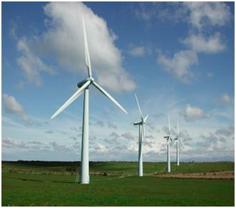
Figure 11: Wind turbines
Hydroelectric. Dams in the U.S. provide 7% of the country’s electricity by using moving water to turn a turbine. Once built, hydroelectric plants are relatively cost effective (so long as water continues to flow) and do not emit contaminants. They are very responsive to peak and intermediate power needs because of their ability to ramp up power generation by increasing water flow through the plant. These advantages make hydroelectric plants extremely popular; however, there are a limited number of locations where they can be built. Since we have no control over the location of a hydroelectric dam, they can be far from population centers, requiring significant infrastructure in order to transmit the power.
Solar. Solar power provides less than 2% of US electricity. There are two types of solar energy: thermal and photovoltaic. Thermal, like other thermal plants, uses the sun’s energy to heat oil which is then used to boil water. Photovoltaic, however, directly uses photons from the sun to excite materials like silicon to release electrons, directly creating electricity. Since clouds and storms can greatly reduce the power generated by solar power, it cannot be used for base or intermediate power loads. Even though solar power can be variable, it is used to help meet peak demand needs because peak demand tends to occur when the sun is at its strongest: during the day and in the summer. The benefits of solar are that it is a renewable resource and that it has a low operational cost. However, even though efforts are being made to reduce the costs associated with solar power, solar panels are expensive and require a large initial investment. Also, there are negative environmental impacts associated with manufacturing solar panels. Lastly, in contrast to wind farms where the land may be used for cattle grazing, it is difficult to repurpose the land once a solar farm has been built on it.
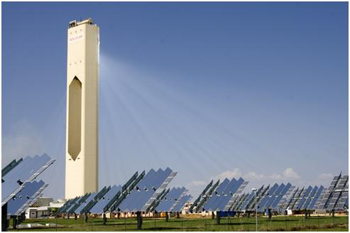
Figure 12: A photovoltaic solar energy farm.